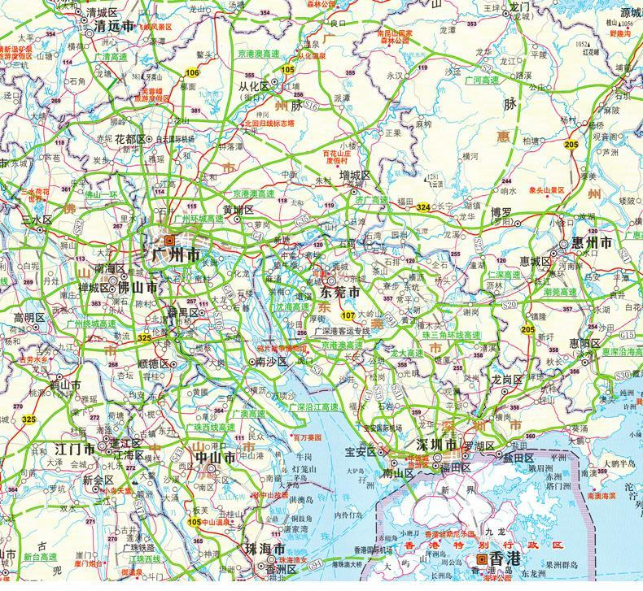

负责经营平台内部系统前端页面的开发，维护和优化工作； 负责页面相关的接入层的开发（nodejs）。
负责前端框架的搭建，公共组件的开发和维护。
本科以上学历，计算机相关专业； 能够熟练运用 HTML、CSS、javascript 构建高性能的web应用程序；
熟悉原生javascript，熟悉使用jQuery，react.js等框架及类库； 熟悉常用WEB开发调试工具；
有使用grunt、gulp、webpack等工具进行前端工程化经验；
熟悉HTTP基本原理，有linux经验优先；
有工作态度端正，能够积极主动去工作，高效推动项目完成；
具有良好的逻辑思维及语言表达能沟通力，要能高效配合团队成员，共同完成项目
深圳市
